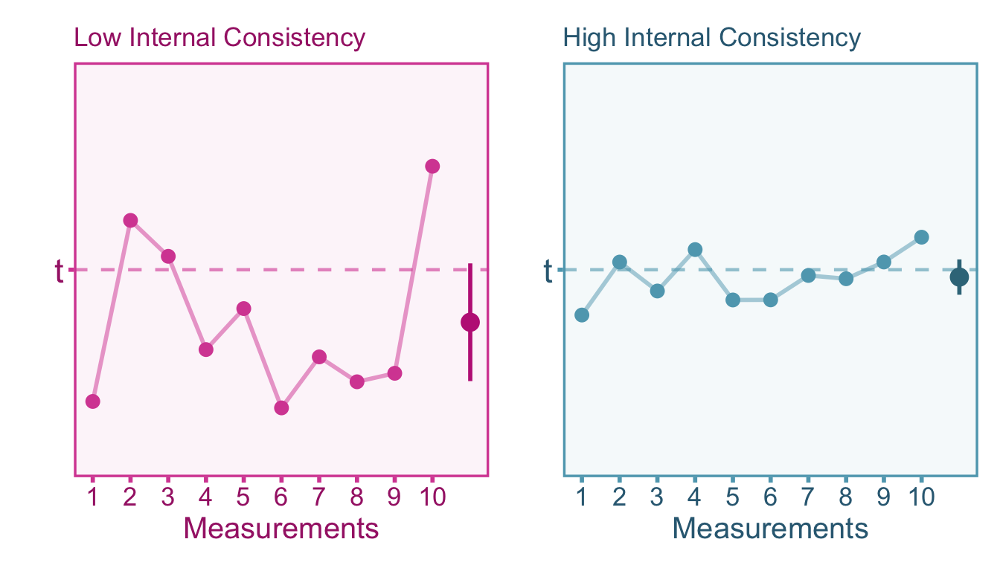
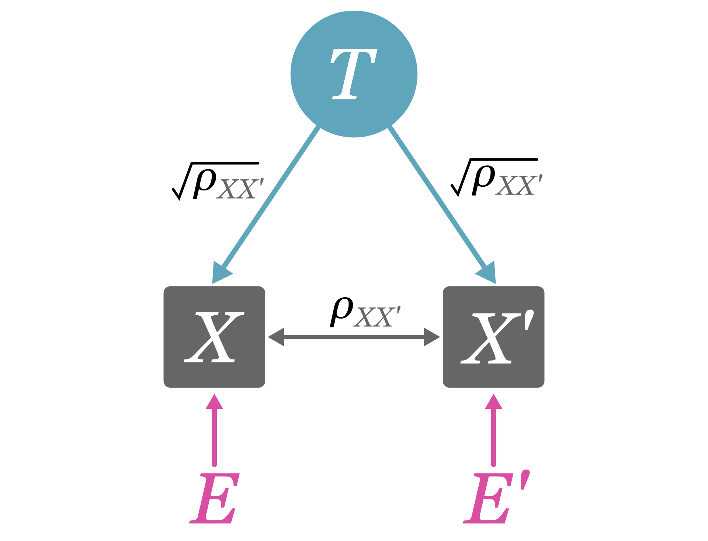
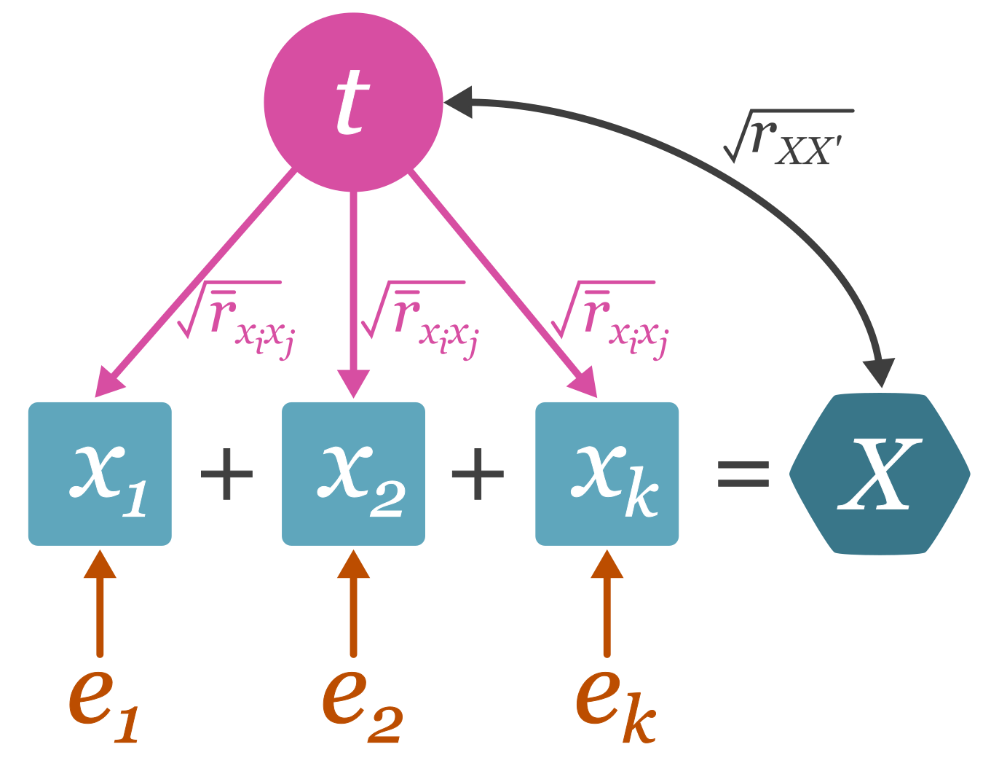
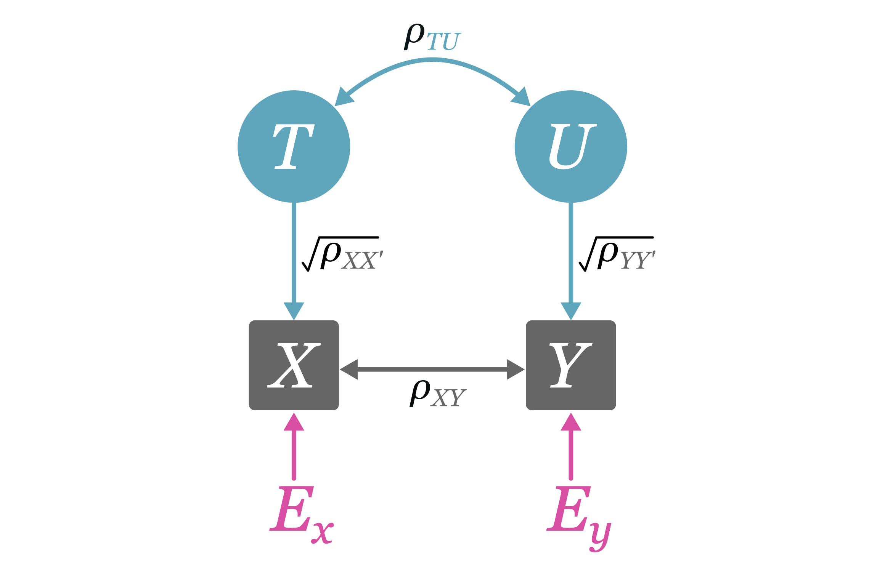
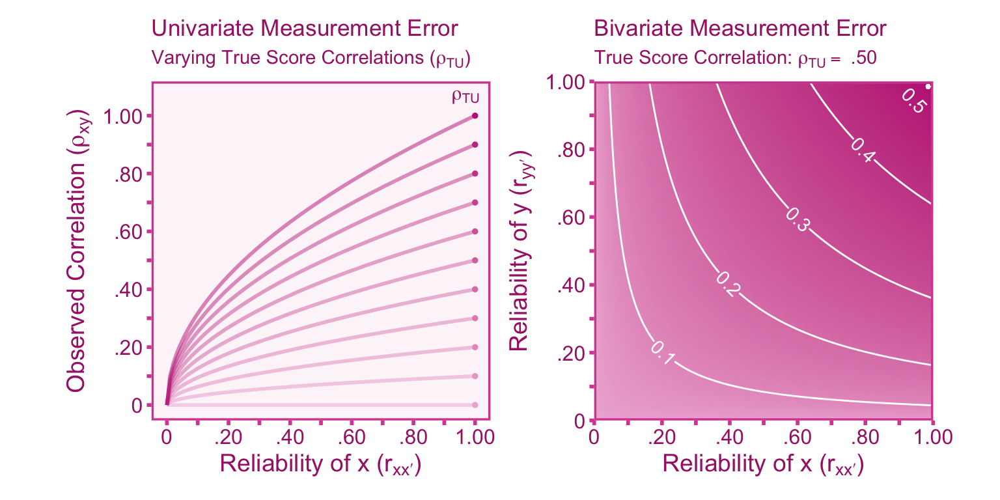

5.1 Introduction
In general terms, measurement is the process of quantifying an attribute or characteristic of something. In scientific measurement, the measurand is the quantity or the attribute we intend to measure. In the psychological sciences, measurands usually take the form of constructs such as intelligence or anxiety. Often the goal of measurement is to produce quantities (i.e., scores) that accurately reflect the measurand. However, quantities that do not reflect a real attribute can still have useful predictive value (e.g., socio-economic status). It is important to note that measures are not all created equal, some perform better than others. Ideally, measures should produce scores that are consistent and repeatable, this is referred to as the reliability of a measure. A high quality measure should produce highly reliable scores. This section will review what reliability is in theory, how to estimate reliability, and how to correct effect sizes for measurement error.
5.2 Reliability in True Score Theory
True score theory (or classical test theory) is a mathematical formalization of observed scores obtained from a measurement procedure. Observed scores, \(x_{im}\), is defined as a score obtained from individual \(i\) upon measurement \(m\). The true score model assumes that each individual, has a true score, \(T_i\), that stays constant over repeated measurements. Variation in observed scores over repeated measurements is due to measurement-specific error, \(e_{im}\),
\[ x_{im} = T_i+e_{im}. \]
Here, measurements are strictly parallel. Strictly parallel measurements have the following four properties (p. 69, Haertel 2006):
- Measurements have identical specifications. That is, each measurement is obtained with an identical format and procedure.
- The distribution of observed scores for each measurement are identical: \(f(x_1) = f(x_2) = \ldots\).
- Any set of two measurements are assumed to covary the same as any other set of two measurements: \(\sigma_{x_1 x_2} = \sigma_{x_2 x_3} = \sigma_{x_1 x_3} = \ldots\).
- Each measurement equally covaries with any other variable: \(\sigma_{x_1 y} = \sigma_{x_2 y} = \ldots\).
True scores can be defined as the expected value (i.e., the mean) of observed scores over repeated measurements such that, \(\mathbb{E}_m[x_{im}]=T_{i}\). Given this assumption, it can be inferred that the average of the resultant errors is zero across repeated measurements, \(\mathbb{E}_m[e_{im}]=0\) and therefore the covariance between errors on repeated measurements is zero and the covariance between errors in parallel measurements is zero (\(\sigma_{e e'}=0\)). It follows that the covariance between errors and true scores is also zero (\(\sigma_{eT}=0\)). The independence between true scores and errors provide convenient parsing of the variance in observed scores (\(\sigma^2_{x}\)) into components of variance in true scores (\(\sigma_T^2\)) and measurement errors (\(\sigma_{e}^2\)),
\[ \sigma_{x}^2 = \sigma_T^2 + \sigma_{e}^2. \tag{5.1}\]
Ultimately we desire to have observed scores that closely resemble true scores, therefore it is important to minimize measurement error variance (\(\sigma^2_e\)). If \(\sigma_{e}^2 = 0\) then the scores can be said to have perfect reliability, that is, observed scores do not vary upon repeated measurements and thus are identical to true scores. In practice, this is virtually never the case. Since we assume that the covariance between errors in parallel measurements is zero, it becomes apparent that the covariance between observed scores in parallel measurements must solely be attributable to variance in true scores, \(\sigma_{xx'}=\,\)\(\sigma_{TT'} + \sigma_{ee'}=\,\)\(\sigma_{TT'}=\,\)\(\sigma_T^2\,\). In true score theory, reliability can be defined as the proportion of true variance in the total observed variance (\(\frac{\sigma_T^2}{\sigma_x^2}\)) or the correlation between observed scores in parallel measurements (\(r_{xx'}\)).
\[ r_{xx'}=\frac{\sigma_{xx'}}{\sigma_x\sigma_{x'}} = \frac{\sigma_T^2}{\sigma^2_{x}}. \] The reliability is also equivalent to the square of the correlation between observed scores and true scores. To understand why this is the case, note that the covariance between parallel forms of a measure is equivalent to the covariance between observed scores and true scores, \(\sigma_{xT}=\)\(\sigma_{(T+e)T}=\)\(\sigma^2_T + \sigma_{Te}=\)\(\sigma^2_T = \sigma_{xx'}\).
\[ r_{xx'} = \frac{\sigma_T^2}{\sigma_{x}^2} = \frac{(\sigma_T^2)^2}{\sigma_x^2 \sigma_T^2}= \frac{\sigma_{xT}^2}{\sigma^2_x\sigma^2_T} = r^2_{xT}. \tag{5.2}\]
It is important to emphasize that true scores are expected values over repeated observations and they do not necessarily correspond to an actual, tangible quantity of interest (Borsboom and Mellenbergh 2002). As a result, every measurement has a true score, regardless of whether it gauges a concrete attribute or not. For example, if we construct a test by summing the responses to the items: “how many languages can you confidently hold a conversation in?” and “Estimate the number of photos you’ve taken in the last year across all devices”. Even in such nonsensical cases, the test’s composite score retains a true score, but this true score does not mirror a tangible reality.

5.3 Reliability vs Validity
Reliability and validity are distinct properties in measurement theory. Validity pertains to whether the scores produced by a measure reflects the quantities it is intended to measure (p. 14 Kelley 1927). According to Borsboom, Mellenbergh, and Van Heerden (2004), a measure is valid if both of the following statements are true:
The attribute exists.
Variations in the attribute causally produce variations in the outcomes of the measurement procedure.
Borsboom’s formulation of validity is simpler and more practical than other formulations such as Cronbach and Meehl’s (1955) nomological network approach to validity. It is important to note that even if an attribute does not exist (statement 1), scores may still provide predictive utility. For example, socio-economic status (SES) is a formative quantity that is constructed from a composite of education, income, occupation status, etc. Although SES is not causal to these indicators, SES can still be used as a predictor of important life outcomes.
5.4 Estimating Reliability
In practice, reliability must be estimated through indirect methods, this is due to the fact that true scores and errors are unknown. There are many reliability estimators that can be used, however we will go over a selection of internal consistency estimators as well as test-retest stability estimators.
5.4.1 Internal Consistency Estimators
Taking multiple measurements and then averaging tends to provide a more stable estimate of true values. For instance, let’s consider the case of Francis Galton (1907), who conducted a study involving 787 individuals estimating the weight of an ox. On average, each person’s estimate deviated by approximately 37 pounds from the actual weight of the ox, which was recorded as 1198 pounds. However, when all the guesses were averaged together, the combined estimate was 1207 pounds, just a 9 pound difference from the true value. This principle can be extended to broader applications, such as measuring psychological constructs. If we were to assess someone’s level of extraversion using ratings from their mother, father, friend, and sibling, the average of their combined assessments would yield a more reliable score compared to relying solely on a single evaluator. So to create a more stable composite score (\(x\)), we can take the score from \(\kappa\) items (\(\mathbb{x}\)) and sum them such that,
\[ x = \mathbb{x}_1 + \mathbb{x}_2 +...+\mathbb{x}_\kappa \]
The most commonly reported reliability estimator in the psychological sciences is coefficient alpha, also referred to as Cronbach’s alpha. Coefficient alpha, along with other internal consistency estimators, serves the purpose of assessing the reliability of composite scores comprising multiple item scores. Coefficient alpha only requires three parameters to calculate, the number of measurements (\(\kappa\)), the variances of each item (\(\sigma^2_{\text{i}_m}\)), and the variance of the composite score (\(\sigma^2_{x}\)). Coefficient alpha will estimate the reliability of the composite observed score, \(x\) (\(r_{xx'}\)),
\[ _\alpha r_{xx'} = \frac{\kappa}{\kappa-1}\left( 1 - \frac{\sum_{m=1}^\kappa \sigma^2_{\mathbb{x}_m}}{\sigma^2_{x}} \right). \tag{5.3}\]
With tighter assumptions (see Haertel 2006), the formula for coefficient alpha can be simplified to just two parameters: the number of measurements (\(\kappa\)) and the average correlation between measured scores (\(\bar{r}_{\mathbb{x}_i \mathbb{x}_j}\), where \(i\neq j\)). This formula is known as Spearman-Brown’s prophecy,
\[ _\text{sb} r_{xx'}= \frac{\kappa \bar{r}_{\mathbb{x}_i \mathbb{x}_j}}{1+(\kappa-1)\bar{r}_{\mathbb{x}_i \mathbb{x}_j}} \tag{5.4}\]
This can be simplified further if we have two observed item scores. This formulation is a variation of split-half reliability:
\[ _\text{sh}r_{xx'}= \frac{2r_{\mathbb{x}_1 \mathbb{x}_2}}{1+r_{\mathbb{x}_1 \mathbb{x}_2}} \tag{5.5}\]
All of these reliability estimators measure internal consistency, therefore they do not account for error outside of the measurement-specific error. There are other sources of error that internal consistency reliability estimates do not account for, such as transient error or rater-specific error.

5.4.2 Calculating Internal Consistency in R
Let us simulate a data set of 50 individuals that were measured four times resulting in four sets of scores (x1,x2,x3,x4) that have the same true score and error variance. Then let us calculate a composite score (x) from these sub-scores.
#set seed
set.seed(343)
# set sample size
n <- 50
# simulate data
T_score <- rnorm(n, 0, 1) # simulate true scores
x1 <- T_score + rnorm(n, 0, 1) # simulate observed scores for measurement 1
x2 <- T_score + rnorm(n, 0, 1) # simulate observed scores for measurement 2
x3 <- T_score + rnorm(n, 0, 1) # simulate observed scores for measurement 3
x4 <- T_score + rnorm(n, 0, 1) # simulate observed scores for measurement 4
# calculate composite score
x <- x1 + x2 + x3 + x4Now let us calculate coefficient alpha from the formula provided in Equation 5.3.
# step 1. calculate variance of observed (measured) scores
var_xm <- c(var(x1),var(x2),var(x3),var(x4))
# step 2. get number of items (k)
k <- length(var_xm)
# step 3. calculate variance of composite score
var_x <- var(x)
# step 4. calculate coefficient alpha reliability
rxx_alpha <- k / (k-1) * (1 - sum(var_xm)/(var_x))
# display reliability
print(round(rxx_alpha,3)) [1] 0.775With the simplification of Coefficient alpha’s formula, let us calculate the reliability via Spearman-Brown’s prophecy formula provided in Equation 5.4.
# step 1. get correlation matrix between all observed scores
corr_mat <- cor(cbind(x1,x2,x3,x4))
# step 2. average off-diagonal elements of matrix
diag(corr_mat) <- NA
rxixj <- mean(corr_mat, na.rm = TRUE)
# step 3. get number of items (k)
k <- dim(corr_mat)[1]
# step 4. calculate Spearman-Brown reliability
rxx_SB <- k * rxixj / (1 + (k-1) * rxixj)
# display reliability
print(round(rxx_SB,3)) [1] 0.775If we simplify even further, we can calculate the Split-Half reliability formula provided in Equation 5.5,
# step 1. make composite scores for each half of the observed scores
xh1 <- (x1 + x2)/2
xh2 <- (x3 + x4)/2
# step 2. calculate the correlation between the scores of both halves
rx1x2 <- cor(xh1,xh2)
# step 3. calculate the split-half reliability
rxx_SH <- 2*rx1x2 / (1 + rx1x2)
# display reliability
print(round(rxx_SH,3)) [1] 0.824Lets see how the results compare to the actual reliability,
# calculate true reliability, true scores must be re-scaled by number of items
rxx = var(k*T_score) / var_x
# display actual reliability
print(round(rxx,3)) [1] 0.734In this case, the reliability estimates do a fairly good job of estimating the true reliability of the observed scores. We can also use the alpha function from the psych package (“Psych: Procedures for Personality and Psychological Research” 2017) to estimate coefficient alpha too. It also provides additional item level information that is quite useful:
# load in package
# install.packages('psych')
library(psych)
# compute summary reliability (only need first table)
alpha(cbind(x1,x2,x3,x4))[[1]] raw_alpha std.alpha G6(smc) average_r S/N ase mean
0.7749847 0.7751377 0.7337024 0.4628829 3.447166 0.05141467 -0.04386823
sd median_r
0.9567892 0.45717985.4.3 Test-Retest Stability Estimator
Transient errors represent fluctuations in observed scores over time. These fluctuations, even if they are systematic (e.g., fatigue over the course of a single day), add extraneous within-person variance that can mask true scores. Considering transient fluctuations as error depends on the research goal, so it is important for researchers to take care in considering which variance components should be considered error in their study (see Section 5.4.5). To estimate test-retest reliability, we can compute the correlation between the measurement at time 1 (\(x_{t_1}\)) and the second measurement at time 2 (\(x_{t_2}\)),
\[ _\text{tr}r_{xx'}= r_{x_{t_1}x_{t_2}}. \]
Note that calculating the pearson correlation coefficient between time-points ignores systematic changes (e.g., practice effects).

5.4.4 Calculating Test-Retest Reliability in R
Lets calculate test-retest reliability in R. First, we can simulate observed scores at two time points, xTime1 and xTime2. We can assume that the true scores remain constant between time points. Second, we can calculate the correlation between the observed scores at each time point (rxx).
# set seed
set.seed(1)
# set sample size
n = 100
# simulate true scores
T_score = rnorm(n,0,1)
# simulate scores at time 1
xTime1 = T_score + rnorm(n,0,.5)
# simulate scores at time 2
xTime2 = T_score + rnorm(n,0,.5)
# calculate test-retest reliability
rxx = cor(xTime1,xTime2)
# display reliability
print(round(rxx,3))[1] 0.755# compare with true reliability
rxx_true = var(T_score) / var(xTime1)
# display actual reliability
print(round(rxx_true,3))[1] 0.7795.4.5 Sources of Measurement Error
Measurement error variance can itself be broken down into multiple sources of error (e.g., transient, ). Depending on the study, different sources of error may be more relevant than others. It is important for a researcher to choose the right reliability estimator for their study since they account for different sources of measurement error. A description of four of the most common sources of error is adapted from table 1 of Wiernik and Dahlke (2020):
Random Response Error: Genuine randomness in responses. Examples include: motor errors and variation in response time.
Time/Environment-Specific (Transient) Error: Fluctuations in scores as a result of the specific time or environment of the measurement. For instance, if researchers administered an ability test to a sample of undergraduate students throughout the course of a day, the student’s who complete the test at the end of the day will likely perform worse than participant’s who completed due to fatigue rather than ability. Errors due to illness, mood, hunger, environmental distractors, etc. all fall under the umbrella of transient errors.
Instrument-Specific Error: Error due to the specific content or make-up of the measurement instrument. For example, a psychological scale using Likert items may show participant’s idiosyncratic interpretations of questions and response options rather than their standing on the latent construct.
Rater/Observer-Specific Error: Errors induced by idiosyncratic biases of individual raters and rater by ratee interactions (e.g., Teacher A gives higher grades to students who stay after class).
Different estimators of reliability account for different sources of measurement error therefore depending on the research design, it is important to carefully choose which reliability is most relevant for your use case. Note that even if two estimators account for the same types of measurement error, they likely hold different assumptions that may be violated in a given research context.
| Estimator | Description | 1 | 2 | 3 | 4 |
|---|---|---|---|---|---|
| Coefficient Alpha | Internal consistency coefficient for composite measures. | X️ | X️ | ||
| Coefficient Omega | Internal consistency coefficient for composite measures with specified factor structure. | X️ | X️ | ||
| Split-Half | Internal consistency coefficient for measurements that are split into two halves. | X️ | X️ | ||
| Kuder-Richardson 20 | Internal consistency when observed scores are binary (special case of coefficient alpha). | X️ | X️ | ||
| Item Response Theory Reliability | Reliability coefficient derived from item response theory (as opposed to classical test theory) | X️ | X️ | ||
| Inter-Rater/Inter-Observer Reliability | Consistency in scoring between raters/observers. | X️ | X️ | ||
| Test-Retest | Stability coefficient for repeated measurements across time | X️ | X️ | ||
| Delayed Coefficient Alpha | Average of all possible split-half reliabilities | X️ | X️ | X️ | |
| G-Coefficient | Reliability coefficient derived from generalizability theory (G-theory). Can incorporate any source of error if enough data is present. | X️ | X️ | X️ | X️ |
5.5 Correction for Bias in Correlations
5.5.1 Defining the Estimand
Continuing with our emphasis on clearly defining our quantity of interest (i.e., the estimand) prior to applying any corrections, let us define it. Our estimand here is the population correlation between true scores of our independent and dependent variables. We can define the observed scores of the independent and dependent variables \(x\) and \(y\) as,
\[ x=T+e_x \]
\[ y=U+e_y. \]
Where \(T\) and \(U\) are the true scores for the independent and dependent variables, respectively. The true score correlation can thus be be denoted by, \(\rho_{TU}\), and can be defined as the standardized covariance,
\[ \rho_{TU} = \frac{\sigma_{TU}}{\sigma_{T}\sigma_{U}}. \]
In a given study, we will only have knowledge of the observed scores of the independent and dependent variables, \(x\) and \(y\), therefore the observed study correlation is \(r_{xy}\). The relationship between the observed correlation and the true population correlation is,
\[ r_{xy} = a\rho_{TU} + \varepsilon. \]
Where \(a\) is the biasing factor. An unbiased estimate of the true score population correlation (\(\rho_{TU}\)) can then be calculated by dividing the obsereved study correlation by the biasing factor,
\[ r_c = \frac{r_{xy}}{a}. \]

5.5.2 Artifactual Bias and Correction
Measurement error induces systematic bias in effect size estimates such as correlation coefficients Spearman (1904). In the population, let us assume there is some factor \(a\) that accounts for the systematic bias in observed score correlations (\(\rho_{xy}\)) relative to true score correlations (\(\rho_{TU}\)), such that
\[ \rho_{xy} = a \rho_{TU}. \]
Since the correlation is defined as the covariance standardized by the standard deviations, the population correlation between true scores, \(T\) and \(U\), is defined as,
\[ \rho_{TU}=\frac{\sigma_{TU}}{\sigma_{T} \sigma_{U}}. \]
Likewise the correlation between the observed scores, \(x\) and \(y\), would be the observed covariance divided by the observed standard deviations. \[ \rho_{xy} =\frac{\sigma_{xy}}{\sigma_{x} \sigma_{y}}. \] However, if we assume that there is no covariance between errors in \(x\) and \(y\) (\(\sigma_{e_x e_y} = 0\)), then the covariance between observed scores is only attributable to the covariance between true scores, therefore \(\sigma_{xy} = \sigma_{TU}\). This means that the observed score correlation can be expressed as,
\[ \rho_{xy} =\frac{\sigma_{TU}}{\sigma_{x} \sigma_{y}}. \tag{5.6}\]
Now the only difference between the observed score correlation and the true score correlation is the standard deviations in the denominator. In the presence of measurement error, the observed score standard deviations (\(\sigma_x\) and \(\sigma_y\)) will be larger than the true score standard deviations (\(\sigma_{T}\) and \(\sigma_{U}\)). Using the definition of reliability, we can show how the observed variance is inflated compared to the true variance as a function of reliability. Since the reliability is defined as the ratio of true variance to total observed variance (see Equation 5.2), we can see how reliability inflates the observed variance
\[\begin{align} \sigma^2_x &=\sigma^2_{T} \left(\frac{\sigma^2_{x}}{\sigma^2_{T}} \right) \\ &= \sigma^2_{T}\left(\frac{1}{r_{xx'}} \right) \\ &= \frac{\sigma^2_{T}}{r_{xx'}}. \end{align}\]Therefore the observed standard deviation is,
\[ \sigma_x = \frac{\sigma_{T}}{\sqrt{r_{xx'}}}. \tag{5.7}\]
If we use the definition of an observed score correlation (Equation 5.6), then we can replace \(\sigma_x\) and \(\sigma_y\) with \(\frac{\sigma_{T}}{\sqrt{r_{xx'}}}\) and \(\frac{\sigma_{U}}{\sqrt{r_{yy'}}}\), respectively. Now we can see how the observed score correlation differs from the true score correlation:
\[\begin{align} \rho_{xy} &= \frac{\sigma_{T U}}{\left[\frac{\sigma_{T}}{\sqrt{r_{xx'}}} \right] \left[ \frac{\sigma_{U}}{\sqrt{r_{yy'}}} \right] } \\ &= \frac{\sigma_{T U}}{\sigma_{T}\sigma_{U}} \cdot \sqrt{r_{yy'}}\sqrt{r_{xx'}} \\ &= \rho_{TU} \sqrt{r_{yy'}}\sqrt{r_{xx'}} \end{align}\]This attenuation formula was first derived by Spearman (1904). Note that this formulation requires that there is no correlation between \(e_x\) and \(e_y\) (\(r_{e_xe_y}=0\)). The study observed correlation will also contain sampling error and thus can be expressed by, \[ r_{xy} = \rho_{xy} + \varepsilon_o \] We can also express it in terms of our estimand, the population true score correlation (\(\rho_{TU}\)),
\[ r_{xy} = \rho_{TU}\sqrt{r_{xx'}r_{xx'}} + \varepsilon_o. \]

It becomes apparent that if we have the reliability of \(x\) and \(y\), we can obtain an unbiased estimate of \(\rho_{TU}\) by dividing both sides of the above equation by \(\sqrt{r_{xx'}r_{xx'}}\) such that,
\[ \frac{r_{xy}}{\sqrt{r_{xx'}r_{xx'}}} =\rho_{TU} + \frac{\varepsilon_o}{\sqrt{r_{xx'}r_{xx'}}}. \]
Therefore the corrected study correlation, \(r_c\), is defined as,
\[ r_c = \frac{r_{xy}}{\sqrt{r_{xx'}r_{xx'}}}. \]
The sampling error of the corrected study correlation is,
\[ \varepsilon_c = \frac{\varepsilon_{o}}{\sqrt{r_{xx'}r_{xx'}}} \]
and thus the sampling variance would be,
\[ \sigma^2_{\varepsilon_c} = \frac{\sigma^2_{\varepsilon_{o}}}{r_{xx'}r_{xx'}}. \]
5.5.3 Correcting Correlations in R
We can simulate continuous data that contains measurement error by using the simulate_r_sample function in the psychmeta package. Below we will simulate observed scores (x_score and y_score) and true scores (T_score and U_score).
# load packages
# install.packages('psychmeta')
library(psychmeta)
# set seed
set.seed(1)
# define parameters
rhoTU <- .5
rxx <- .8
ryy <- .7
n <- 500
# simulate data
data <- simulate_r_sample(n = n,
rho_mat = reshape_vec2mat(rhoTU),
rel_vec = c(rxx, ryy),
sr_vec = c(1, 1),
var_names = c("x","y"))
# obtain observed scrores
x_score <- data$data$observed$x
y_score <- data$data$observed$y
# obtain true scores
T_score <- data$data$true$x
U_score <- data$data$true$yThen we can compute observed score (rxy).
# compute observed score correlation and standard error
rxy <- cor(x_score,y_score)
# compute sampling variance of observed score correlation
var_e_o <- (1-rxy^2) / (n-2)
# print results
print(paste0('rxy = ',round(rxy,3),' var_e_o = ',round(var_e_o,4)))[1] "rxy = 0.351 var_e_o = 0.0018"Let us now compare the observed correlation with the true score correlation (rTU).
# compute observed score correlation and standard error
rTU <- cor(T_score,U_score)
# compute sampling variance of observed score correlation
var_e <- (1-rTU^2) / (n-2)
# print results
print(paste0('rTU = ',round(rTU,3),' var_e = ',round(var_e,4)))[1] "rTU = 0.463 var_e = 0.0016"The observed correlation is substantially lower than the true score correlation. In order to correct the observed score correlation, we can calculate it by hand or use the correct_r() function. Lets first correct by hand using the equations in Section 5.5.2
# correct correlation coefficient
rc <- rxy / sqrt(rxx*ryy)
# correct sampling variance
var_e_c <- var_e_o / sqrt(rxx*ryy)
# print results
rbind(paste0('rc = ',round(rc,3)),
paste0('var_e_c = ',round(var_e_c,4))) [,1]
[1,] "rc = 0.47"
[2,] "var_e_c = 0.0024"Now lets correct the correlation with the correct_r() function,
# correct correlation
correct_r(rxyi = rxy,
rxx = rxx,
ryy = ryy,
n = n)Correlations Corrected for Measurement Error:
---------------------------------------------------------------------------------------
value CI_LL_95 CI_UL_95 n n_effective
1 0.47 0.364 0.569 500 222As we can see, the corrected correlation (\(r_c = .470\)) is a more accurate estimate of the true score population correlation \(\rho_{TU} = .500\), than the observed score correlation (\(r_{xy}=.351\)).
5.6 Correction for Bias in Standardized Mean Differences (d)
5.6.1 Defining the Estimand
Prior to correcting for measurement error let us define our estimand. Our estimand here is the difference in the means of group \(A\) and \(B\) with respect to the true scores of our dependent variable. We can define the observed scores of the independent and dependent variables \(x\) and \(y\) as,
\[ y_A = U_A + e_A \]
\[ y_B = U_B + e_B. \]
Where \(U_A\) and \(U_B\) are the true scores for group \(A\) and group \(B\), respectively. The true score standardized mean difference can thus be be denoted by, \(\delta_{U}\), and can be defined as,
\[ \delta_{U} = \frac{\overline{U}_A - \overline{U}_B}{\sigma_{U_P}}. \]
Where \(\overline{U}\) is the mean of true scores for the respective group. In a given study, we only have access to the observed scores of the dependent variables, \(y\), therefore the observed score study standardized mean difference is \(d_{y}\). The relationship between the population true score standardized mean difference (\(\delta_U\)) can be related to the observed study standardized mean difference with the following formulation:
\[ d_y = a\delta_U+\varepsilon. \]
Where \(a\) is the artifactual bias induced by measurement error and \(\varepsilon\) denotes sampling error. To obtain an unbiased estimate of \(\delta_{U}\), we can correct the observed standardized mean difference by dividing by \(a\),
\[ d_c = \frac{d_y}{a}. \]
5.6.2 Artifact Correction for Unreliability
We can calculate the standardized mean difference of the observed scores by dividing the mean difference in observed scores (\(\bar{y}_A-\bar{y}_B\)) by the pooled standard deviation (\(\sigma_p\)). It is important to note that the mean of true scores and the mean of observed scores will be identical due to the fact that measurement error only affects variance in scores rather than the means. Therefore, we can express the observed standardized mean difference as,
\[ d_y = \frac{\bar{y}_A-\bar{y}_B}{\sigma_{y_P}} = \frac{\overline{U}_A-\overline{U}_B}{\sigma_{y_P}}. \]
The pooled standard deviation is a weighted average of the observed score standard deviations,
\[ \sigma_{y_P}=\sqrt{\frac{(n_A+1)\sigma^2_{y_A}+(n_B+1)\sigma^2_{y_B}}{n_A+n_B-2}}. \]
To express \(\sigma_{y_P}\) in terms of the true score standard deviations, we can replace the observed score standard deviations with the attenuated true score standard deviation in Equation 5.7,
\[ \sigma_{y_P} = \sqrt{\frac{(n_A+1)\left(\frac{\sigma^2_{U_A}}{r_{yy'_A}}\right)+(n_B+1)\left(\frac{\sigma^2_{U_B}}{r_{yy'_B}}\right)}{n_A + n_B - 2}}. \]
Alternatively, we can pool the reliability and the true score standard deviations separately so that we can obtain a simplified version of the above equation,
\[ \sigma_{U_P} = \sqrt{\frac{(n_A+1)\sigma_{U_A}^2+(n_B+1)\sigma_{U_B}^2}{n_A + n_B - 2}} \]
\[ r_{yy'_P} = \sqrt{\frac{(n_A+1) r_{yy'_A}^2+(n_B+1)r_{yy'_B}^2}{n_A + n_B - 2}}. \]
Then we can express \(\sigma_{y_P}\) similarly to Equation 5.7,
\[ \sigma_{y_P} = \frac{\sigma_{U_P}}{\sqrt{r_{yy'_P}}} \]
Now we can put it all together and see how the observed score standardized mean difference (\(\delta_y\)) is biased relative to the true score standardized mean difference (\(\delta_U\)),
\[\begin{align} \delta_y &= \frac{\bar{y}_A-\bar{y}_B}{\sigma_{y_P}} \\[1em] &= \frac{\overline{U}_A-\overline{U}_B}{\sigma_{y_P}} \\[1em] &= \frac{\overline{U}_A-\overline{U}_B}{\frac{\sigma_{U_P}}{\sqrt{r_{yy'_P}}}} \\[1em] &= \frac{\overline{U}_A-\overline{U}_B}{\sigma_{U_P}}\sqrt{r_{yy'_P}} \\[1em] &= \delta_U\sqrt{r_{yy'_P}}. \end{align}\]This attenuation bias is very similar to the one we saw in the correlation, with the only difference being that the pooled reliability is used here instead of the total sample reliability. Within a study, the observed study standardized mean difference (\(d_y\)) is a function of the observed population standardized mean (\(\delta_y\)), artifact bias (\(a\)), and sampling error (\(\varepsilon\)),
\[ d_y = \delta_y + \varepsilon_o. \]
replacing the observed population standardized mean difference, \(\delta_y\), with \(\delta_U\sqrt{r_{yy'_P}}\), gives us,
\[ d_y = \delta_U\sqrt{r_{yy'_P}} + \varepsilon. \] Therefore to obtain the corrected study standardized mean difference (\(d_c\)) we can divide \(d_y\) by the attenuation factor,
\[ d_c = \frac{d_y}{\sqrt{r_{yy'_P}}}. \]
Where the sampling variance of the corrected SMD must also be similarly adjusted,
\[ \sigma^2_{\varepsilon_c} = \frac{\sigma^2_{\varepsilon_o}}{r_{yy'_P}}. \]
Although the attenuation factor is quite simple, in more complex formulations (e.g., bivariate direct range restriction), it will be easier to apply a simplified correction for the sampling variance using the corrected correlation coefficient:
\[ \sigma^2_{\varepsilon_c} = \sigma^2_{\varepsilon_o}\left(\frac{d_c}{d_y}\right)^2. \] It is important to point out that this correction can only be done if when estimates of the within-group reliability are available. It is common that studies will only report the full sample reliability. If there are differences between groups on the variable, the total sample reliability will over-estimate the within-group reliability. When the total sample reliability is all that is available, to correct \(d_y\), we must first convert it to a point-biserial correlation coefficient (\(r_o\)) using the observed proportion of subjects in either group \(A\) or \(B\) (\(p\,\); it does not matter which one is chosen, as long as it is consistent throughout).
\[ r_o = \frac{d_y}{\sqrt{\frac{1}{p(1-p)}+d_y^2}}. \]
Then correct \(r_o\) for the total sample reliability,
\[ r_c = \frac{r_o}{\sqrt{r_{yy'}}} \]
Then we can convert \(r_c\) back into \(d_c\),
\[ d_c = \frac{r_c}{\sqrt{p(1-p)(1-r_c^2)}} \]
The same process can be done for the sampling variance as well, but instead we can put it all into one equation,
\[ \sigma^2_{\varepsilon_c} = \frac {\sigma^2_{\varepsilon_o}\left(\frac{r_c}{r_o}\right)^2} {\left(1+d_y^2p[1-p]\right)^3\left(1-r_c^2\right)^3} \]
5.6.3 Correcting Standardized Mean Differences in R
We can simulate data that contains measurement error by using the simulate_d_sample function in the psychmeta package. Below we will simulate observed scores (y_score) and true scores (U_score).
# load packages
# install.packages('psychmeta')
library(psychmeta)
set.seed(123)
# define parameters
Means = c()
ryyA <- .75
ryyB <- .70
nA <- 100
nB <- 100
n <- nA + nB
# simulate data
data<- simulate_d_sample(n_vec = c(nA, nB),
rho_mat_list = list(reshape_vec2mat(1),reshape_vec2mat(1)),
mu_mat = rbind(c(.5,0),
c(0,0)),
sigma_mat = rbind(c(1,1),
c(1,1)),
rel_mat = rbind(c(ryyA,1),
c(ryyB,1)),
sr_vec = c(1,1),
group_names = c("A", "B"))
# obtain observed scores
y_score <- data$data$observed$y1
group <- data$data$observed$group
# obtain true scores
U_score <- data$data$true$y1Then we can compute observed score standardized mean difference (dy).
# compute observed score means and standard deviations
Mean_A <- mean(y_score[group=='A'])
Mean_B <- mean(y_score[group=='B'])
SD_A <- sd(y_score[group=='A'])
SD_B <- sd(y_score[group=='B'])
# compute pooled standard deviation
SD_P <- sqrt( ((nA-1)*SD_A^2 + (nB-1)*SD_B^2) / (nA+nB-2) )
# compute standardized mean difference
dy <- (Mean_A - Mean_B) / SD_P
# compute sampling variance of observed score correlation
var_e_o <- n/(nA*nB) + dy^2 / (2*n)
# print results
print(paste0('dy = ',round(dy,3),' var_e_o = ',round(var_e_o,4)))[1] "dy = 0.273 var_e_o = 0.0202"Let us now compare the observed score standardized mean difference with the true score standardized mean difference (dU).
# compute true score means and standard deviations
Mean_A <- mean(U_score[group=='A'])
Mean_B <- mean(U_score[group=='B'])
SD_A <- sd(U_score[group=='A'])
SD_B <- sd(U_score[group=='B'])
# compute pooled standard deviation
SD_P <- sqrt( ((nA-1)*SD_A^2 + (nB-1)*SD_B^2) / (nA+nB-2) )
# compute standardized mean difference
dU <- (Mean_A - Mean_B) / SD_P
# compute sampling variance of the true score SMD
var_e <- n/(nA*nB) + dy^2 / (2*n)
# print results
print(paste0('dU = ',round(dU,3),' var_e = ',round(var_e,4)))[1] "dU = 0.509 var_e = 0.0202"The observed score standardized mean difference is substantially lower than the true score SMD (.286 vs .509). In order to correct the observed score correlation for attenuation, we can calculate it by hand. Lets correct the observed standardized mean difference for measurement error variance using the equations in Section 5.6.2.
# calculate the pooled reliability
ryy_P <- sqrt(((nA-1)*ryyA^2 + (nB-1)*ryyB^2) / (nA+nB-2))
# correct correlation coefficient
dc <- dy / sqrt(ryy_P)
# correct sampling variance
var_e_c <- var_e_o / sqrt(ryyA)
# print results
print(paste0('rc = ',round(dc,3),' var_e_c = ',round(var_e_c,4)))[1] "rc = 0.32 var_e_c = 0.0233"Now lets correct the correlation with the correct_r() function. The correct_d() function only takes in the total sample reliability, therefore we can extract the total sample reliability from the simulated dataset and then use the resulting reliability coefficient in the ryy argument.
# total sample reliability
ryy = data$overall_results$observed$parallel_ryyi_total[1]
# correct correlation
correct_d(d = dy,
ryy = ryy,
n1 = n)d Values Corrected for Measurement Error:
---------------------------------------------------------------------------------------
value CI_LL_95 CI_UL_95 n n_effective
1 0.322 -0.00878 0.667 200 142As we can see, the corrected correlation (\(d_c = .32\)) is a more accurate estimate of the true score population SMD \(\delta_U = .500\), than the observed score correlation (\(r_{xy}=.273\)).
5.7 Estimating Reliability with Limited Information
Reliability estimates should preferably be calculated from within the study’s sample, however there are a couple of ways to estimate reliability when this information is not provided. A common way to obtain an estimate of the reliability is to look in meta-analyses or a test manuals. If the number of items in a study differs from the test manual, you can approximate the reliability of the study’s test, with a re-arrangement of the Spearman-Brown prophecy formula,
\[ r_{xx'_{study}} \approx \frac{1}{\frac{\kappa_{\text{ref}}}{\kappa_{\text{study}}} \left(\frac{1}{r_{xx'_{study}}} - 1\right) + 1}. \]
Where \(\kappa_{\text{ref}}\) and \(\kappa_{\text{study}}\) denote the number of items in the reference test and the test used in the study, respectively.